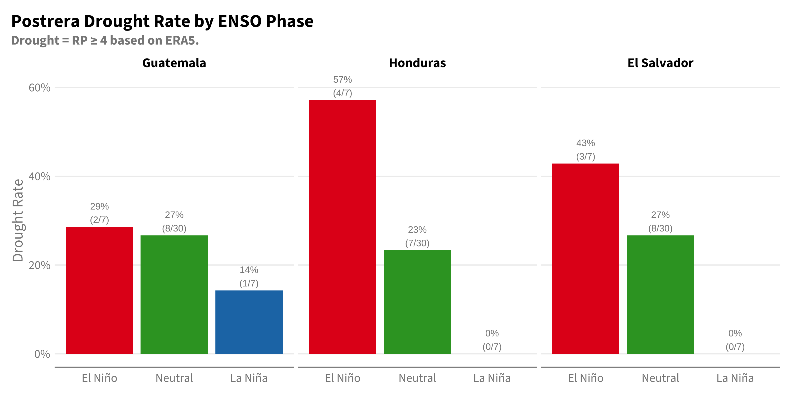
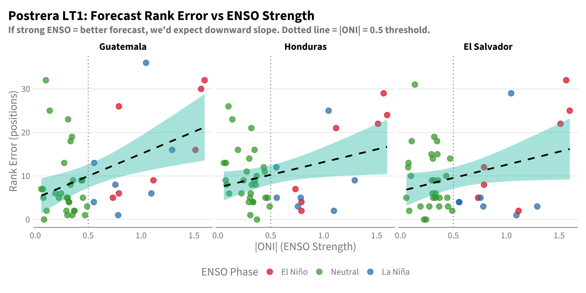
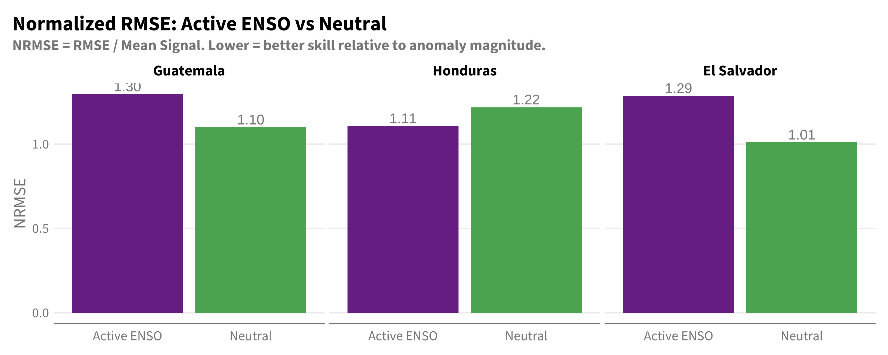

This chapter explores the relationship between ENSO strength and forecast reliability.
Key question: Can we trust SEAS5 drought forecasts more when ENSO signal is strong?
If the answer is yes, this has operational implications - we might weight the forecast more heavily during strong ENSO years and rely more on climatology during neutral conditions.
# Classify ENSO phase for each year# Use JJA ONI for Postrera (Sep-Nov season)df_oni_jja <- df_oni |>filter(month %in%6:8) |>group_by(year) |>summarise(oni =mean(oni, na.rm =TRUE), .groups ="drop") |>mutate(enso_phase =case_when( oni >=0.5~"El Niño", oni <=-0.5~"La Niña",TRUE~"Neutral" ),enso_phase =factor(enso_phase, levels =c("El Niño", "Neutral", "La Niña")) )# Join ENSO to datadf_joined_enso <- df_joined |>left_join(df_oni_jja, by ="year") |>filter(!is.na(enso_phase))# Count years by ENSO phasedf_oni_jja |>filter(year >=1981, year <=2024) |>count(enso_phase) |>gt() |>tab_header(title ="Years by ENSO Phase (1981-2024, JJA ONI)")
Years by ENSO Phase (1981-2024, JJA ONI)
enso_phase
n
El Niño
7
Neutral
30
La Niña
7
9.2 Drought Rate by ENSO Phase
First, let’s confirm that ENSO phase is predictive of drought - this is the climate signal we’re trying to leverage.
Code
# RP threshold functioncalc_rp_threshold <-function(x, rp_target =4, direction =-1) { x <- x[!is.na(x)] n <-length(x)if (n <3) return(NA_real_) ranks <-rank(x *-direction, ties.method ="average") rp <- (n +1) / ranksapprox(rp, x, xout = rp_target, rule =2)$y}# Calculate drought threshold (RP=4) for observationsobs_thresholds <- df_joined_enso |>filter(year >=1981, year <=2024, window =="postrera") |>group_by(country_aoi) |>summarise(obs_thresh =calc_rp_threshold(obs_mm, 4, -1), .groups ="drop")# Classify observed droughtsdf_drought_enso <- df_joined_enso |>filter(year >=1981, year <=2024, window =="postrera", leadtime ==0) |>left_join(obs_thresholds, by ="country_aoi") |>mutate(obs_drought = obs_mm <= obs_thresh) |>distinct(country_aoi, year, enso_phase, obs_drought, oni)# Drought rate by ENSO phasedf_drought_rate <- df_drought_enso |>group_by(country_aoi, enso_phase) |>summarise(n_years =n(),n_drought =sum(obs_drought),drought_rate =mean(obs_drought),.groups ="drop" )df_drought_rate |>mutate(country_aoi =factor(country_aoi, levels =c("Guatemala", "Honduras", "El Salvador"))) |>ggplot(aes(x = enso_phase, y = drought_rate, fill = enso_phase)) +geom_col() +geom_text(aes(label =sprintf("%.0f%%\n(%d/%d)", drought_rate *100, n_drought, n_years)),vjust =-0.2, size =3) +facet_wrap(~country_aoi) +scale_y_continuous(labels = scales::percent, limits =c(0, 0.6)) +scale_fill_manual(values =c("El Niño"="#E31A1C", "Neutral"="#33A02C", "La Niña"="#1F78B4")) +labs(title ="Postrera Drought Rate by ENSO Phase",subtitle ="Drought = RP ≥ 4 based on ERA5.",x =NULL, y ="Drought Rate", fill ="ENSO Phase" ) +theme(legend.position ="none")

El Niño years have substantially higher drought rates. This is real climate signal.
9.3 Forecast Error vs ENSO Strength
The key question: Does forecast accuracy improve when ENSO signal is strong?
If yes, we could weight the forecast more heavily during strong ENSO years.
Code
# Calculate forecast errors for Postrera LT1 (the harder case)df_errors <- df_joined_enso |>filter(year >=1981, year <=2024, window =="postrera", leadtime ==1) |>group_by(country_aoi) |>mutate(# Rank within each country's distributionobs_rank =rank(obs_mm),fcst_rank =rank(fcst_mm),n_years =n(),# Errorsabs_error =abs(fcst_mm - obs_mm),rank_error =abs(obs_rank - fcst_rank),# ENSO strength (absolute value)oni_abs =abs(oni) ) |>ungroup()
9.3.1 Scatter: Rank Error vs |ONI|
Code
df_errors |>mutate(country_aoi =factor(country_aoi, levels =c("Guatemala", "Honduras", "El Salvador"))) |>ggplot(aes(x = oni_abs, y = rank_error, color = enso_phase)) +geom_point(size =3, alpha =0.7) +geom_smooth(aes(group =1), method ="lm", se =TRUE, color ="black", linetype ="dashed") +geom_vline(xintercept =0.5, linetype ="dotted", color ="grey50") +facet_wrap(~country_aoi) +scale_color_manual(values =c("El Niño"="#E31A1C", "Neutral"="#33A02C", "La Niña"="#1F78B4")) +labs(title ="Postrera LT1: Forecast Rank Error vs ENSO Strength",subtitle ="If strong ENSO = better forecast, we'd expect downward slope. Dotted line = |ONI| = 0.5 threshold.",x ="|ONI| (ENSO Strength)",y ="Rank Error (positions)",color ="ENSO Phase" )

9.3.2 Correlation: |ONI| vs Forecast Accuracy
Code
# Correlation between |ONI| and rank errordf_oni_corr <- df_errors |>group_by(country_aoi) |>summarise(n =n(),corr_oni_rank_error =cor(oni_abs, rank_error, method ="spearman"),corr_oni_abs_error =cor(oni_abs, abs_error, method ="spearman"),.groups ="drop" )df_oni_corr |>gt() |>fmt_number(columns =starts_with("corr"), decimals =3) |>cols_label(country_aoi ="Country",n ="N Years",corr_oni_rank_error ="Corr: |ONI| vs Rank Error",corr_oni_abs_error ="Corr: |ONI| vs Abs Error" ) |>tab_header(title ="Does Strong ENSO = Lower Forecast Error?",subtitle ="Negative correlation would indicate better forecasts during strong ENSO" )
Does Strong ENSO = Lower Forecast Error?
Negative correlation would indicate better forecasts during strong ENSO
Country
N Years
Corr: |ONI| vs Rank Error
Corr: |ONI| vs Abs Error
El Salvador
44
0.016
0.252
Guatemala
44
0.264
0.058
Honduras
44
−0.070
0.206
9.3.3 Which Years Are in Each Category?
First, let’s see which specific years fall into each ENSO strength category.
Code
# Show which years are in each categorydf_errors |>distinct(year, oni, oni_abs, enso_phase) |>mutate(enso_strength =case_when( oni_abs >=1.0~"Strong", oni_abs >=0.5~"Moderate",TRUE~"Weak/Neutral" ) ) |>arrange(desc(oni_abs)) |>select(year, oni, enso_phase, enso_strength) |>gt() |>fmt_number(columns = oni, decimals =2) |>tab_header(title ="Years by ENSO Strength (sorted by |ONI|)")
Lower NRMSE = better skill relative to signal strength
Country
ENSO State
N
RMSE (mm)
Mean Signal (mm)
NRMSE (RMSE/Signal)
El Salvador
Active ENSO
14
160
124
1.29
El Salvador
Neutral
30
101
100
1.01
Guatemala
Active ENSO
14
130
100
1.30
Guatemala
Neutral
30
90
82
1.10
Honduras
Active ENSO
14
149
134
1.11
Honduras
Neutral
30
129
106
1.22
Code
df_rmse_by_enso |>mutate(country_aoi =factor(country_aoi, levels =c("Guatemala", "Honduras", "El Salvador"))) |>ggplot(aes(x = enso_active, y = nrmse, fill = enso_active)) +geom_col() +geom_text(aes(label =sprintf("%.2f", nrmse)), vjust =-0.3, size =4) +facet_wrap(~country_aoi) +scale_fill_manual(values =c("Active ENSO"="#7B3294", "Neutral"="#5AAE61")) +labs(title ="Normalized RMSE: Active ENSO vs Neutral",subtitle ="NRMSE = RMSE / Mean Signal. Lower = better skill relative to anomaly magnitude.",x =NULL, y ="NRMSE" ) +theme(legend.position ="none")

9.5 What About Overall Skill Coming from ENSO?
A different question: Does the model’s overall skill come from correctly predicting the average conditions during ENSO years, rather than individual year accuracy?
Code
# Compare mean forecast vs mean observed by ENSO phasedf_means_by_phase <- df_errors |>group_by(country_aoi, enso_phase) |>summarise(n =n(),mean_obs =mean(obs_mm),mean_fcst =mean(fcst_mm),.groups ="drop" )df_means_by_phase |>pivot_longer(cols =c(mean_obs, mean_fcst), names_to ="type", values_to ="mm") |>mutate(type =if_else(type =="mean_obs", "Observed", "Forecast"),country_aoi =factor(country_aoi, levels =c("Guatemala", "Honduras", "El Salvador")) ) |>ggplot(aes(x = enso_phase, y = mm, fill = type)) +geom_col(position ="dodge") +facet_wrap(~country_aoi) +scale_fill_manual(values =c("Observed"="#1F78B4", "Forecast"="#E31A1C")) +labs(title ="Mean Rainfall by ENSO Phase: Forecast vs Observed",subtitle ="Does SEAS5 correctly rank the phases on average?",x =NULL, y ="Mean Rainfall (mm)", fill =NULL )
ENSO Phase Ordering: Does Forecast Match Observed?
Rank 1 = driest phase
enso_phase
mean_obs
obs_order
mean_fcst
fcst_order
El Salvador
El Niño
598
1
504
1
Neutral
650
2
604
2
La Niña
793
3
685
3
Guatemala
El Niño
483
1
344
1
Neutral
522
2
410
2
La Niña
571
3
465
3
Honduras
El Niño
429
1
315
1
Neutral
472
2
392
2
La Niña
607
3
481
3
9.6 Conclusion
The hypothesis that “ENSO = more trustworthy forecast” is NOT supported by the data.
The simpler binary comparison (with better sample sizes) shows:
Country
Active ENSO (n=14)
Neutral (n=30)
Difference
El Salvador
r=0.46
r=0.56
Neutral better
Guatemala
r=0.20
r=0.55
Neutral much better
Honduras
r=0.48
r=0.53
Similar
Key finding: Neutral years have equal or better forecast skill than ENSO-active years. Guatemala shows the largest difference - forecasts perform much worse during active ENSO (r=0.20 vs r=0.55).
9.6.1 Why might ENSO-active years have worse (not better) forecasts?
Non-linear teleconnections: The ENSO-Central America relationship may have high year-to-year variability. Some El Niño years are very dry, others (like 2014) are unexpectedly wet.
Forecast spread: During ENSO events, ensemble spread may be larger, making the ensemble mean less reliable.
The model captures the mean shift but not the variance: SEAS5 correctly predicts El Niño = drier on average (see phase ordering table), but within El Niño years, it cannot reliably rank individual years.
9.6.2 Operational implications
Cannot assume “strong ENSO signal = more trustworthy forecast” - the data doesn’t support this
Neutral years actually have the most reliable forecasts for ranking
During ENSO events: The forecast correctly indicates elevated (El Niño) or reduced (La Niña) drought risk on average, but specific year predictions are less reliable
This finding challenges the intuition that predictable forcing (ENSO) translates to more accurate forecasts.